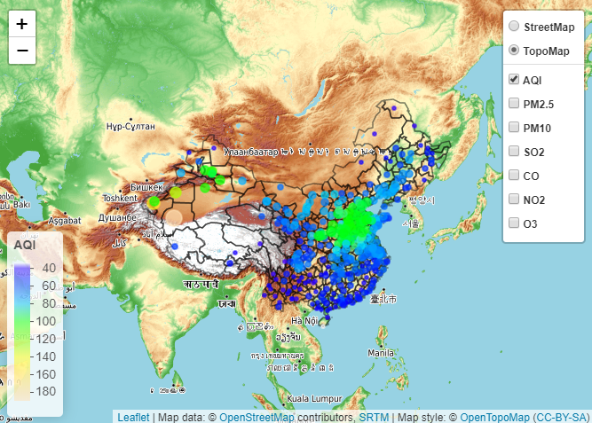

year_data<-data%>%group_by(cn_en=.$cn_en)%>%summarise(mAQI=mean(AQI),
mPM25=mean(PM25),
mPM10=mean(PM10),
mSO2=mean(SO2),
mCO=mean(CO),
mNO2=mean(NO2),
mO3=mean(O3))
year_data<-left_join(year_data,city,by=c("cn_en"="cn_en"))%>%
select(cn_en,lon,lat,2:8)
pal_mAQI<-colorNumeric(c("transparent",topo.colors(100,alpha = NULL)), year_data$mAQI)
pal_mPM25<-colorNumeric(c("transparent",topo.colors(100,alpha = NULL)), year_data$mPM25)
pal_mPM10<-colorNumeric(c("transparent",topo.colors(100,alpha = NULL)), year_data$mPM10)
pal_mSO2<-colorNumeric(c("transparent",topo.colors(100,alpha = NULL)), year_data$mSO2)
pal_mCO<-colorNumeric(c("transparent",topo.colors(100,alpha = NULL)), year_data$mCO)
pal_mNO2<-colorNumeric(c("transparent",topo.colors(100,alpha = NULL)), year_data$mNO2)
pal_mO3<-colorNumeric(c("transparent",topo.colors(100,alpha = NULL)), year_data$mO3)
p<-year_data%>%
leaflet()%>%
addProviderTiles("OpenTopoMap",group="TopoMap")%>%
addProviderTiles("OpenStreetMap",group="StreetMap")%>%
addPolygons(data=border,fill = FALSE, weight =1.5,color="black")%>%
addCircleMarkers(lng=~lon,lat=~lat,radius=~mAQI/20,weight=2, color=~pal_mAQI(year_data$mAQI),
fillOpacity=0.7,label = ~mAQI, group="AQI")%>%
addCircleMarkers(lng=~lon,lat=~lat,radius=~mPM25/20,weight=2, color=~pal_mPM25(year_data$mPM25),
fillOpacity=0.7,label = ~mPM25, group="PM2.5")%>%
addCircleMarkers(lng=~lon,lat=~lat,radius=~mPM10/20,weight=2, color=~pal_mPM10(year_data$mPM10),
fillOpacity=0.7,label = ~mPM10, group="PM10")%>%
addCircleMarkers(lng=~lon,lat=~lat,radius=~mSO2/10,weight=2, color=~pal_mSO2(year_data$mSO2),
fillOpacity=0.7,label = ~mSO2, group="SO2")%>%
addCircleMarkers(lng=~lon,lat=~lat,radius=~mCO/10,weight=2, color=~pal_mCO(year_data$mCO),
fillOpacity=0.7,label = ~mCO, group="CO")%>%
addCircleMarkers(lng=~lon,lat=~lat,radius=~mNO2/10,weight=2, color=~pal_mNO2(year_data$mNO2),
fillOpacity=0.7,label = ~mNO2, group="NO2")%>%
addCircleMarkers(lng=~lon,lat=~lat,radius=~mO3/20,weight=2, color=~pal_mO3(year_data$mO3),
fillOpacity=0.7,label = ~mO3, group="O3")%>%
addLayersControl(baseGroups=c("StreetMap","TopoMap"),
overlayGroups = c("AQI","PM2.5","PM10","SO2","CO","NO2","O3"),
options=layersControlOptions(collapsed = FALSE))%>%
addLegend("bottomleft",pal=pal_mAQI,values=year_data$mAQI,title="AQI",group="AQI")%>%
addLegend("bottomleft",pal=pal_mAQI,values=year_data$mAQI,title="PM2.5",group="PM2.5")%>%
addLegend("bottomleft",pal=pal_mAQI,values=year_data$mAQI,title="PM10",group="PM10")%>%
addLegend("bottomleft",pal=pal_mAQI,values=year_data$mAQI,title="CO",group="CO")%>%
addLegend("bottomleft",pal=pal_mAQI,values=year_data$mAQI,title="NO2",group="NO2")%>%
addLegend("bottomleft",pal=pal_mAQI,values=year_data$mAQI,title="O3",group="O3")
#p